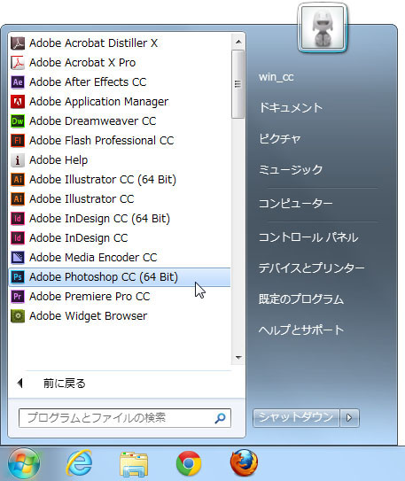
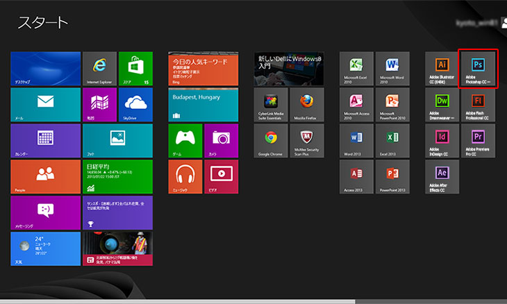
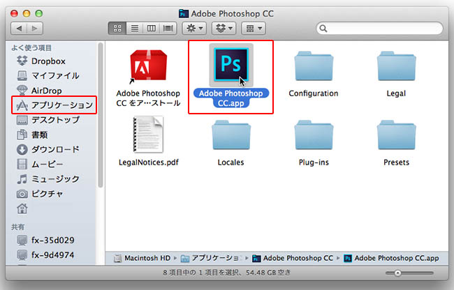
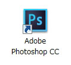
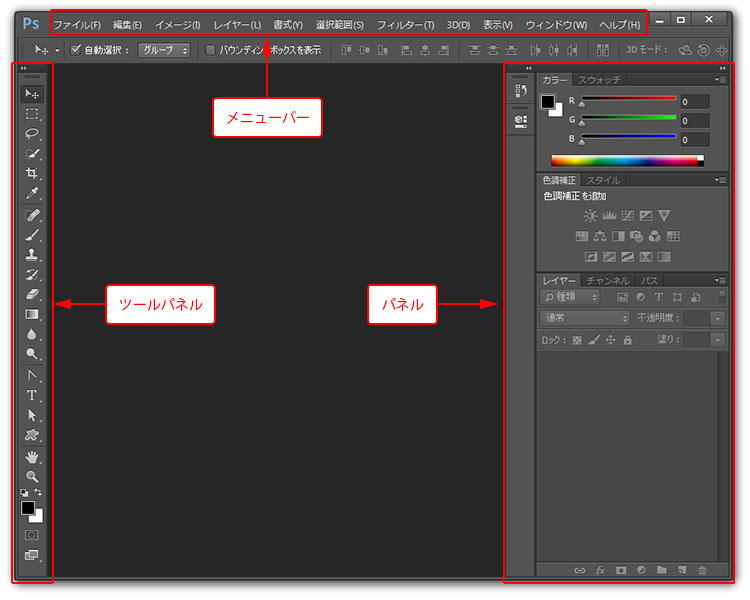
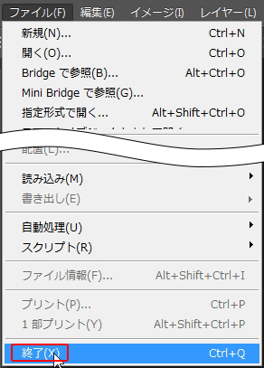
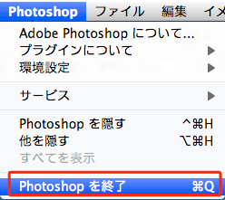

第2章 設定と基本操作
第1節 Photoshopとは
本項では、フォトショップの起動と終了方法および画面の名称について学習します。
第2項 Photoshopの起動方法
Photoshopを起動してみましょう
Windows 7の場合
起動するには画面左下の[スタート]ボタンをクリックし、
[すべてのプログラム]-[Adobe Photoshop CC]をクリックします。
※インストールされているPCが64bit版の場合は[Adobe Photoshop CC（64bit）]をクリックしてください。

Windows 8の場合
スタート画面から[Adobe Photoshop CC]をクリックします。
※インストールされているPCが64bit版の場合は[Adobe Photoshop CC（64bit）]をクリックしてください。

Macの場合
Finderの[アプリケーション]から[Adobe Photoshop CC]フォルダ内の
[Adobe Photoshop CC]のアイコンをダブルクリックします。

デスクトップ上にショートカットまたはエイリアスを作成しておけば、ダブルクリックで起動することができ便利です。
Windowsの場合すべてのプログラム内のAdobe Photoshop CCアイコンを右クリック⇒送る⇒デスクトップ（ショートカットを作成）で作成できます。
Macの場合はMacintosh HDのアプリケーション内のAdobe Photoshop CCフォルダの中にあるAdobe Photoshop CCアイコンを右クリックし、ファイルメニューから エイリアスを作成 を選択します。新しくできたエイリアスをデスクトップへドラッグすることで作成できます。
画面の紹介
ここではこれからの学習に必要な画面の各部名称について説明します。
各部の詳しい使い方などについては後ほど説明します。

- メニューバー
画面の最上部に「ファイル」や「編集」などの文字が並んでいる部分を「メニューバー」と呼びます。
たとえば[ファイル]メニューからファイルの新規作成や保存を行ったり、
[編集]メニューから画像のコピーやペースト、変形を行うなど
フォトショップの様々な機能を利用する場合はここから各機能を呼び出すことになります。
- ツールパネル
画面左側1列に様々なアイコンが並んでいる部分を「ツールパネル」と呼びます。
たとえばマウスで描画するための[ブラシツール]や画像の中を部分的に選択するための
[選択ツール]などここに表示されているツールを使用し、画像を編集していくことになります。
- パネル
画面右側に表示されている小さなウィンドウの集まりを「パネル」と呼びます。
色を設定するための[カラーパネル]やレイヤーを操作する際に利用する[レイヤーパネル]など
メニューやツールから呼び出した機能の詳細などを設定するために必要なウィンドウになります。
初期状態では一部の[パネル]しか表示されていませんが、[ウィンドウ]メニューから
表示されていない他の[パネル]を呼び出すことができます。
フォトショップの終了
フォトショップを終了しましょう。
Windowsの場合は[ファイル]メニューから[終了]を選択します。
（画面右上の[×]ボタンをクリックでも終了できます。）

Macの場合は[Photoshop]メニューから[Photoshopを終了]を選択します。
（赤い「閉じる」アイコンをクリックしても
フォトショップを終了したことになりませんので注意してください。）
